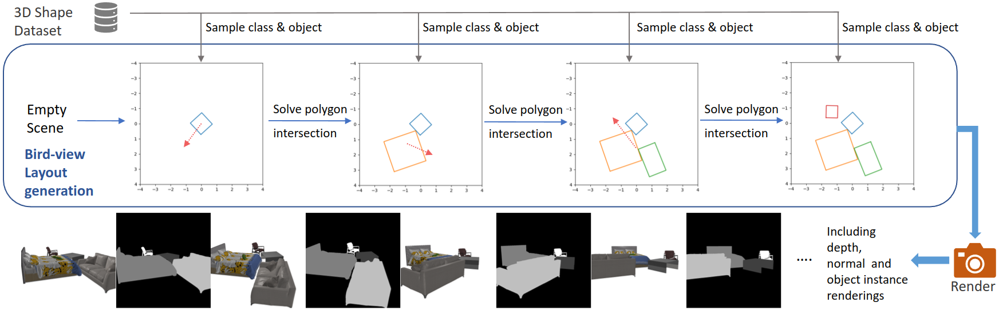

Single-view 3D shape retrieval is a challenging task that is increasingly important with the growth of available 3D data. Prior work that has studied this task has not focused on evaluating how realistic occlusions impact performance, and how shape retrieval methods generalize to scenarios where either the target 3D shape database contains unseen shapes, or the input image contains unseen objects.
In this paper, we systematically evaluate single-view 3D shape retrieval along three different axes: the presence of object occlusions and truncations, generalization to unseen 3D shape data, and generalization to unseen objects in the input images. We standardize two existing datasets of real images and propose a dataset generation pipeline to produce a synthetic dataset of scenes with multiple objects exhibiting realistic occlusions.
Our experiments show that training on occlusion-free data as was commonly done in prior work leads to significant performance degradation for inputs with occlusion. We find that that by first pretraining on our synthetic dataset with occlusions and then finetuning on real data, we can significantly outperform models from prior work and demonstrate robustness to both unseen 3D shapes and unseen objects.
MOOS: Multi-Object Occlusion Scenes
To facilitate studying generalization in single-view shape retrieval, we propose a scalable synthetic dataset generation pipeline that we call Multi-Object Occlusion Scenes (MOOS). Our generation pipeline allows for control over the key variables we study: 1) amount of occlusion and truncation; and 2) novel shapes that are set aside for evaluation and not seen in training. Scenes in MOOS are comprised of randomly selected 3D shapes from 3D-FUTURE that are randomly arranged to form a scene. To generate a scene layout with natural occlusions in real environment, we use a heuristic algorithm that iteratively places newly sampled 3D shapes into the existing layout, ensuring the 2D bounding box from a top-down view does not intersect with previously inserted 3D shapes.
Results
Generalization to retrieval of 3D shapes for unseen object queries is crucial for deployment in practical applications. We show results on MOOS seen (rows 1-3) and unseen (rows 4-7) objects. The target has an orange mask in the 2nd column. For seen objects, we retrieve the matching object despite occlusions. For unseen objects, we see failures for objects with thin structures (row 4 and 7).
We also demonstrate transfer of CMIC models pretrained on MOOS to two datasets with real images, Pix3D and Scan2CAD. We show qualitative examples as below including Top-1 retrievals on real unseen occluded objects with the models trained (Non-FT) and fine-tuned (FT) on Pix3D or Scan2CAD. The object query is highlighted with a blue mask in the RGB image. Green outlines are shapes matching the ground truth. The retrievals not matching the ground truth still resemble the observed object.
BibTeX
If you find our work useful, please cite our paper below.
@article{wu2023generalizing,
author = {Wu, Qirui and Ritchie, Daniel and Savva, Manolis and Chang, Angel.X},
title = {{Generalizing Single-View 3D Shape Retrieval to Occlusions and Unseen Objects}},
year = {2023},
eprint = {2401.00405},
archivePrefix = {arXiv},
primaryClass = {cs.CV}
}